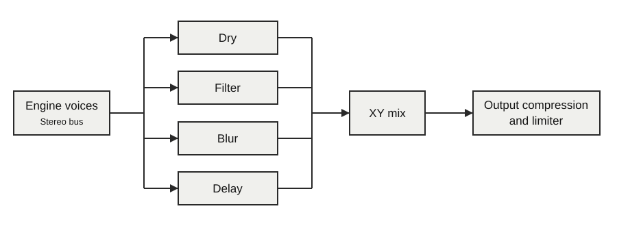

Note keyboard · parallel FX · pressure
Layers
Play one four-lane instrument with the normal note keyboard on the left and shape its sound with a parallel effects field on the right. The two halves control different layers of instrument A. All eight source voices remain available to the engine.
Choose Layers
- Open Capture + Menu → Mode, select Layers, and click the main encoder.
- Load samples into lanes 1–4 using Shift + the corresponding Track button.
- Play the left pads. Press the right pads to blend the four FX corners.
- Hold a right-hand FX corner for about half a second, or double tap it, to toggle editing on. Repeat the gesture on that corner, or press Back, to leave editing.
Outside the clip and chain editors, Copy switches to Single; press it again to return to Layers with its source and FX settings retained.
Switch A and FX editing
Tap Capture to switch between instrument A and the FX layer on release. Each side remembers its last page. For example, move from a Grains page to FX DETAIL and back without searching through the Pages hub. Up/Down stays within the current page group. If an engine or effect change removes a remembered page, Thru opens that side’s main page.
In the overview, Capture changes editing focus while keeping both surfaces visible; Menu opens the remembered page for that side. The overview header shows A or FX, and Capture is brighter for FX focus. Engine pages are marked A; FX CORNER and FX DETAIL identify C1–C4. Holding Capture for performance controls, Capture + Menu and Capture + Track shortcuts keep their normal actions.
Keyboard and pitch
The sixteen left pads use the same keyboard layout as a half in Split mode, with four columns, the selected octave, Root and Scale. Choose any of the fifteen playback engines and edit its normal ENGINE and engine-detail pages. Left-hand notes do not select engine corners or open an editor. All four sample lanes and all eight source voices belong to instrument A.
Pads & Scale retains the normal pad options and pressure behaviour. VOICE selects Poly, Mono or Legato; Shift + a note pad latches it with the usual optional timed release. In Legato, another note changes pitch without restarting the active playhead or envelope. External MIDI uses the same instrument settings and ordinary note pitches.
Four independent FX corners
Each corner is a separate stereo effect instance. The initial layout is Dry / Filter across the top and Blur / Delay across the bottom. An exact corner selects its branch; edges mix two; interior positions mix four. Each branch has its own output trim. You can assign the same effect more than once, including two Blurs with different persistence, smear and stereo width.
Hold two FX pads to combine their corner mixes, weighted by pressure. Holding the Filter and Delay corners blends those branches without introducing Blur. The effects receive the same instrument output independently. Their outputs are mixed; one corner does not process another corner.

FX histories continue while their contribution is zero, so returning to Delay or Blur reveals the ongoing processed sound. Moving away fades that branch according to its weight. Stereo branches share 512 samples of processing delay: about 11.6 ms at 44.1 kHz. Intentional delay time, the Pitch/Detune reading window and Rotary’s moving delays are additional. Normalized mix weights prevent a gain increase simply from adding more corners; effect resonance and output trim still change level.
| Effect | Display | Controls | What it controls |
|---|---|---|---|
| Dry | DRY | LVL | Original stereo sound; other sound controls are reserved. |
| Filter | FILT | CUT / RES / DRIV / RESP | Resonant filter with drive and three responses. |
| Tape | TAPE | FMT / REC / AGE / MECH | Tape format, saturation, aging and shared stereo wow/flutter. |
| Fracture | FRAC | PROC / contextual controls | Ten signal transformations, including Crush, Splice, Logic and octaves. |
| Shred | SHRD | CIRC / DRIV / FDBK / COLR | Eight distortion circuits with governed feedback. |
| Pitch/Detune | PITC | PITC / FINE / WIND / SPRD | Transpose the stereo source or detune its two channels independently. |
| Rotary | ROTR | RATE / DEPT / RAMP / SPRD | Independent horn/drum rotation, Doppler motion and stereo width. |
| Delay | DLY | TIME / FDBK / TONE / PING | Stereo delay with cross-channel feedback. |
| Delay Field | DFLD | TIME / SPRD / FDBK / MOVE | Four stereo taps with spacing and moving placement. |
| Reverb | RVRB | TYPE / DCAY / DAMP / PRE | Plate or Room with independent decay, damping and pre-delay. |
| Blur | BLUR | SMEA / PERS / TONE / WIDE | Spectral smoothing, persistence, tone and width. |
| Spectral Spray | SPRY | SPRY / DRFT / HOLD / DMG | Redistribute spectral energy with moving patterns and held tails. |
| Buffer | BUF | SIZE / RATE / REPT / MOVE | Capture and rearrange short pieces of the incoming stereo sound. |
| Rerun | RRUN | SIZE / HOLD / GATE / PITC | Captured stereo repeats, gating and pitch. |
| Shutter | SHUT | RATE / GATE / SHAP / SWNG | Rhythmic amplitude envelopes over the ongoing source. |
| Tumble | TMBL | SPAN / PATT / REPT / REVR | Slice rearrangement with repeats, reverse and saved seeds. |
| Spool | SPOL | TIME / DPTH / REVR / RCVR | Buffered slowdown, backspin and recovery. |
See Layers FX for each control, ranges and starting points. The corner editor uses the same eight knobs for all seventeen choices.
Knob 1 steps through related effect families. On FX CORNER, click the main encoder to open the grouped picker. Back returns from effects to families, then to the editor. See effect selection.
Pressure and release
FX pressure has two choices. DEPTH moves from dry audio toward the chosen FX blend as pressure increases. CHAR keeps the chosen FX depth and moves each corner’s designated parameter by its ZAMT. Choose OFF, P1–P8 or MACRO with Z TO on that corner’s page. MACRO moves several related controls together; positive or negative ZAMT sets its direction and strength. See each effect’s pressure macro. MIX sets the maximum overall field depth.
RLS chooses STAY, retaining the last blend and pressure after release, or DRY, returning smoothly to dry when the last FX touch is released. With STAY, the engaged FX pad remains illuminated after release. FX clip playback moves this indicator with the recorded field; positions between pads illuminate the nearest pad. DRY clears the retained indicator on release. Shift + an FX pad latches that contribution so it can remain an anchor while you add other touches. Shift + a left pad retains Thru’s note latch and optional timed release.
Edit corners
A quick corner touch changes the sound while keeping the performance display visible. Hold one of the four right-hand corners for about 500 ms, or double tap it within 300 ms, to open its editor. The editor stays open when you release the pad. Repeat either gesture on the same corner to return, or press Back. A deliberate gesture on another corner selects that corner for editing. Ordinary FX touches keep the current editing target. Shift + a corner retains its normal FX latch action.
FX CORNER contains the primary controls. Most effects also have one FX DETAIL page; use Up/Down to move between them. Dry, Filter and Pitch/Detune use a single sound page. C1–C4 in the header identifies the corner. The detail page uses knobs 1–4; its lower four cells are reserved. Pressure targets P1–P4 are the primary sound controls and P5–P8 are the four detail controls.
| Knob | Display | What it controls |
|---|---|---|
| 1 | FX | Effect algorithm: one of the seventeen choices above. |
| 2–5 | Effect labels | The four controls listed above; unused Dry cells are reserved. |
| 6 | Z TO | Pressure destination: OFF, primary sound control P1–P4, detail control P5–P8 when available, or MACRO for coordinated movement. |
| 7 | ZAMT | Positive or negative movement of the selected control in CHAR mode. |
| 8 | LVL | Output trim for this corner only. |
To choose an effect from the menus, select CORN on LAYERS or FX TOOLS, then open FX CORNER. FX TOOLS copies and pastes the selected effect corner, including its algorithm and settings. Paste supports Undo. Engine parameters always belong to instrument A; changing or holding an FX corner does not redirect engine edits.
Performance controls
| Knob | Display | What it controls |
|---|---|---|
| 1 | POS | Instrument A sample position. |
| 2 | FLD | Instrument A sample field width. |
| 3 | SPD | Instrument A playback speed. |
| 4 | STK | Instrument A stack position. |
| 5 | FX X | Continuous horizontal FX position. |
| 6 | FX Y | Continuous vertical FX position. |
| 7 | GLID | FX-field glide, 5–1500 ms. |
| 8 | MIX | Overall FX depth. |
These are the lane-and-FX overview encoder assignments. Knobs 1–4 edit the normal instrument controls. Knobs 5–8 control the FX field. LAYERS also provides continuous FX X/Y, including the exact centre between the four central physical pads. Waveform view retains its regular controls.
Clips, MIDI and saved projects
Record captures left notes, note pressure, engine parameter motion, FX mix weights, FX pressure and FX corner edits. Notes already held when recording starts are included. FX-only clips work too: record the right-hand field without left-hand notes, then play live notes through the resulting FX loop. FX positions and pressure already held when recording begins are included. Field positions retain their timing and held sections; GLID provides the same smooth transitions during replay. The performance is stored with its Layers patch and sample assignments. Overdub creates an undoable take; Undo Take restores the previous FX corner and field settings. Clip copy, chains, pattern fades and project export retain Layers data. A live FX gesture takes control from replay until you restart the clip; recording it into an overdub makes it part of that take.
The MIDI registry’s Layers group provides FX X/Y, glide, depth, pressure and FX corner selection on global channel 16. These targets are also available to Custom CC mapping. Existing engine-parameter messages edit the normal instrument controls. FX parameter messages edit the selected FX corner. See the MIDI guide and complete NRPN CSV.
Layers saves clip-bank format 37 and reads earlier clip banks and format-36 project exports. Export a project backup before trying the new version; keep a backup made by the previous version if you need to return to it.